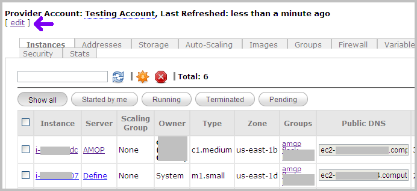
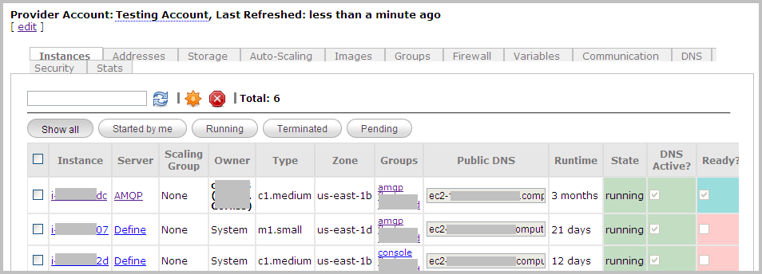

Managing Provider Accounts
Currently, Nimbul supports Amazon EC2 accounts only.
| PERMISSIONS REQUIRED |
| To edit or delete a provider account, you must be a provider account administrator. All users can add provider accounts to the system. For more information, see the Overview. |
Topics covered on this page:
Add, Edit or Delete Basic Account Information
Configure or Update Account Details
Add, Edit or Delete Basic Account Information
Adding an Account
To add a provider account to Nimbul, complete these steps. Note: The account must already exist outside of Nimbul.
- In the main Nimbul menu, click Provider Accounts. The provider accounts dashboard appears.
- Click the green plus sign near the search box.
- Enter the requested information, then click Create Provider Account.
Note: The Master Private Key in the basic account information must correspond to the Default Main Key on the Security tab on the provider account details page (see below).
When you add a provider account to the system, you automatically become an administrator of that provider account.
Editing an Account
To edit basic provider account information, complete these steps.
- In the main Nimbul menu, click Provider Accounts.
- In the Name column, click the name of the account you want to edit.
- At the top of the provider account page (under the name of the account), click the edit link.
 - Edit the fields as necessary.
Tip: To edit a masked field, click it to make a text box appear. Edit the value, then click the Save button immediately to the right of the text box. - To save your changes, click the Update button.
Deleting an Account
WARNING: In most cases, you will not need to delete a provider account. An account can remain dormant in Nimbul indefinitely. Delete the account only if you are certain you will never need access to it again.
To delete a provider account, complete these steps.
- In the main Nimbul menu, click Provider Accounts.
- Select the checkbox to the left of the account you want to delete.
- Click the trash can icon next to the green plus sign. A warning message will appear; click OK to confirm. A second warning appears. Type
yes, then click OK.
When you delete a provider account, you delete it only from Nimbul — the external account still exists with the cloud provider.
Configure or Update Account Details
Viewing Account Details
To configure or update an account, first view the account details by completing these steps:
- In the main Nimbul menu, click Provider Accounts.
- In the Name column, click the name of the account you want to configure or update. The provider account details page appears.

The provider account details page contains the following tabs:
| Tab | Available Actions |
| Instances |
|
|---|---|
| Addresses |
|
| Storage |
|
| Auto-Scaling |
|
| Images |
|
| Groups |
|
| Firewall |
|
| Variables |
|
| Communication |
|
| DNS |
|
| Security |
|
| Stats |
|
Configuring and Updating Account Details
UI Elements
Use the tabs described above to configure and update provider account details as you use Nimbul. Note the following UI elements on each tab:
- Click links to servers, instances, security groups and other objects to get more details and make changes.
- Use the standard icons to enable, disable, add and remove various resources.
- Look for confirmation messages and other information in the left margin (under the main Nimbul menu).
- Be sure to click Update buttons where available.
For more information, see User Interface Elements.
Minimum Configuration
Configurations vary depending on cloud providers and local environments. At a minimum, you will want to set up the following aspects of each provider account:
- Images: On the Images tab, register your existing server images.
- Security: When you add an existing cloud provider account to Nimbul, your existing security groups will be imported. To fine-tune these groups, use the Firewall and Groups tabs. On the Security tab, you can set a default security group (set of firewall rules) and a main key. For more information, see Managing Security Groups.
Note: The main key on the Security tab must correspond to the Master Private Key entered in the basic account information so that Nimbul can access instances. - Local Configuration: Review the other provider account tabs to ensure that you have set up any additional elements for your local configuration, such as environment variables.
After you have configured your provider accounts, you (or a cluster administrator) will still need to configure clusters, especially server profiles. For more information, proceed to the Clusters and Servers section.